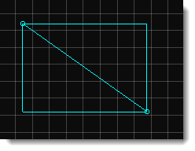

Introduction
Paths (t2dPath) are spline-based line segments which you can constrain an
object to. Think of them like a rollercoaster track - a path could be
laid down to resemble a series of complex movements, and can then have a
car placed on it to move and follow its curves. Paths are good if, for
example, you have a sawblade that you wish to have move around the edges
of a platform. Through simple properties, you can set the sawblade to
follow the path around the platform forever.
Creation
Open the Create Panel by pressing cmd-c or tapping on the 'Create'
tab. Find the 'Other' drop-down section at the bottom of the Create
panel. Here you will find the Path Object.
Click on the Path Object and drag it into your Scene. Release the mouse
button when you have found a proper location for the path. The path
object now exists but it has no nodes. A path must have at least two
nodes to be valid. Click the mouse on where you want your path to start,
and again where you want your path to end.

Now press Enter to close the Path Editor. You have successfully created a path that can now be have object mounted upon it!
If you need to edit the path once it has been placed, select the Path in
the Scene Editor, move the mouse-cursor to the top of the Path Object
so the Edit Buttons display, and click on 'Edit this Path' to re-open
the path editor. Just as before, press Enter when you are finished
editing.
Properties
Torque 2D ships with 3 types of paths, and has the capabilities for
the user to add in new types. Each Path Type refers to a different
mathematical way of representing the path, and directly effects the way
path angles are handled.
LINEAR - The default path type. Creates sharp edges with no
curves or smooth tweening. A Linear path can be a line segment with a
specific beginning and end - this is the only path type that is not
required to loop.
BEZIER - The edges of a Bezier path can have their curves
individually edited. Simply drag the white handles next to each curve.
Smaller curves will be sharper with a more direct movement, while wide
curves will have a slower, smoother movement.
CATMULL - The edges of a Catmull path are determined dynamically
by the placement of each node in the path. This is good for when you
need a very smooth path, but do not require direct control of every
individual node in the path.
CUSTOM - Custom allows for new mathematical path variations to be
programmed into the engine. Refer to the engine programming
documentation for more information on Custom Paths in Torque 2D.
Script Representation
new t2dPath() {
pathType = "CATMULL";
canSaveDynamicFields = "1";
Position = "68.105 9.227";
size = "866.210 681.546";
CollisionMaxIterations = "3";
AlphaTestValue = "-1";
node0 = "203.389572 350.000000 0.000000 10.000000";
node1 = "334.140015 313.904816 0.000000 10.000000";
node2 = "347.630157 95.000000 0.000000 10.000000";
node3 = "501.209991 -56.554741 0.000000 10.000000";
node4 = "177.447021 -331.545715 0.000000 10.000000";
node5 = "-365.000000 -192.493683 0.000000 10.000000";
node6 = "-148.391357 230.000000 0.000000 10.000000";
nodeCount = "7";
objectCount = "0";
};
Conclusion
From reading the Path documentation for the Torque 2D editor, you
should now understand how to create a path in your Scene, and how to
mount objects to that path. You should also understand the different
types of paths offered by default in the Torque 2D editor. |